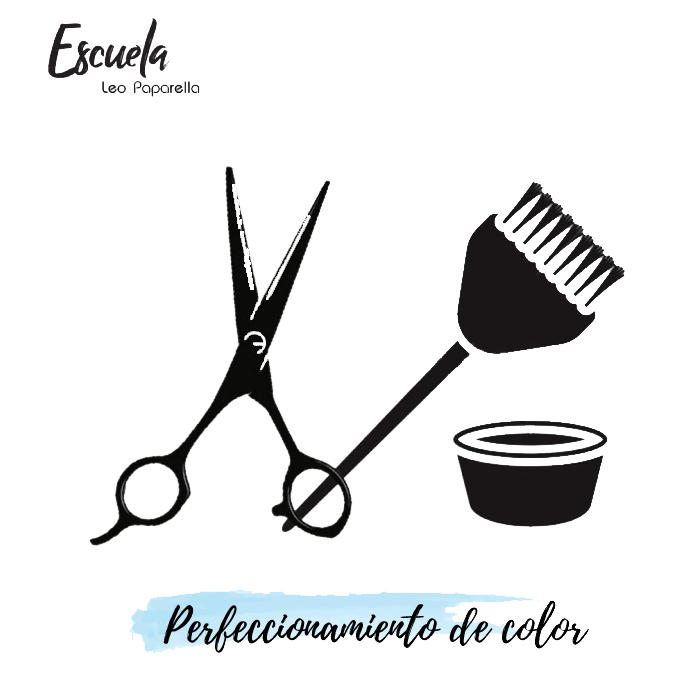

CURSOS DISPONIBLES
-
ESTILISTA PROFESIONAL

Aquí se verán temas como tricología capilar, cómo lavar y tratar tanto el cuero cabelludo como el cabello. Cortes básicos, corte de perímetro largos, medios, cortos, escalados, corte masculino básico. Color básico, circulo cromático, técnicas de diseño de color. Efectos de mechas con papel, free hands, balayage, desgaste de puntas, etc. También aprenderás técnicas de peinado y recogido.
-
MANICURÍA

En este curso enseñamos la estructura de la uña y sus posibles alteraciones, el manejo de herramientas adecuadas, paso a paso de la manicura, esmaltado y decoración. Manicura masculina, spa de manos, belleza de pies, diseño y refuerzo de uñas. Todos los salones de belleza cuentan con el servicio adicional de manicuría, por lo que es una profesión importante para incorporar a la hora de dedicarse al mundo de la belleza.
-
BARBERÍA

-
PERFECCIONAMIENTO EN COLOR
Diseñado para profesionales que necesitan actualizar sus técnicas de moda. Aquí se verán 8 estilos de corte: messy, effortless, shaggy, wob, carre, bob, genderless, boyis haircut. Además se incluirán tips para mejorar la rentabilidad del salón.